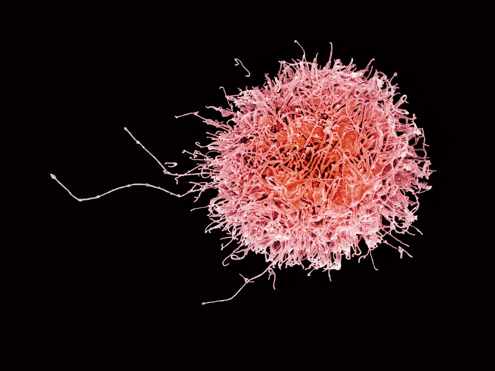
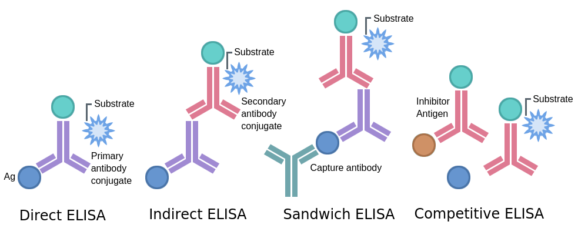
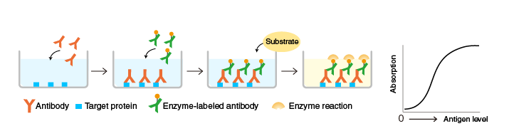
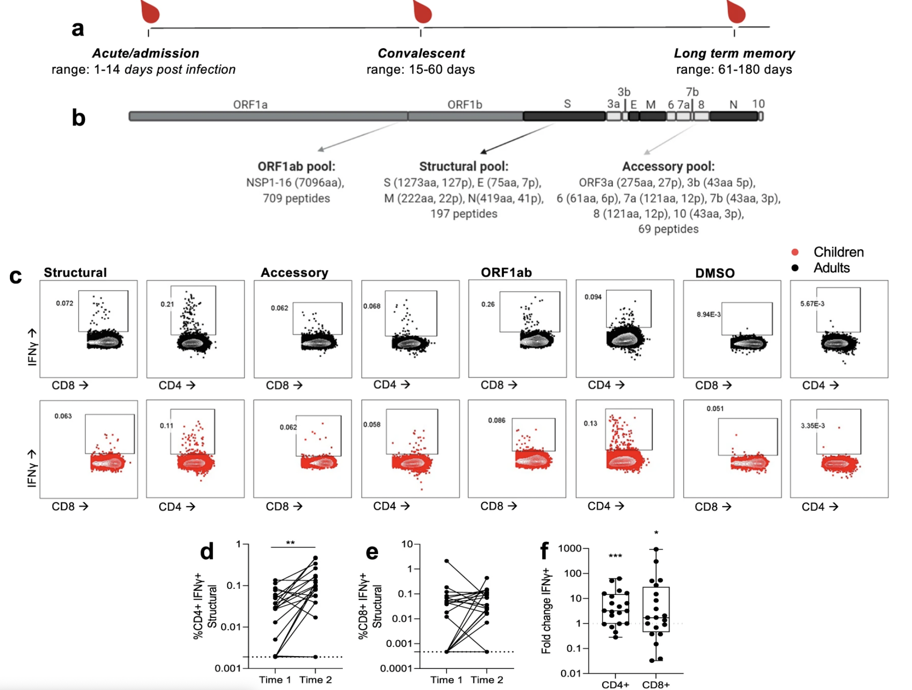
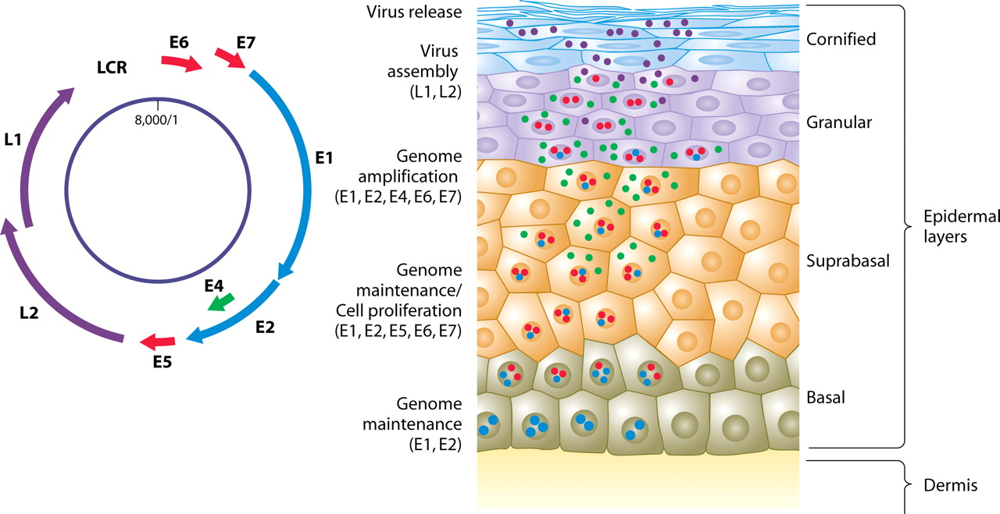
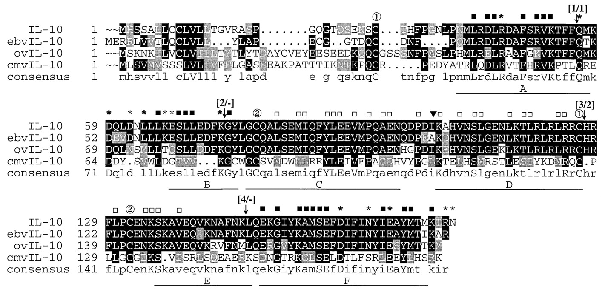
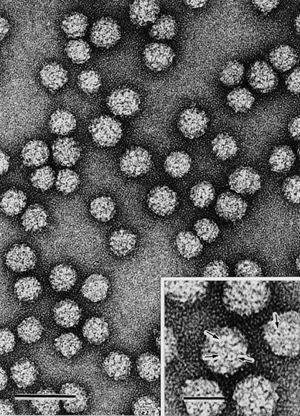
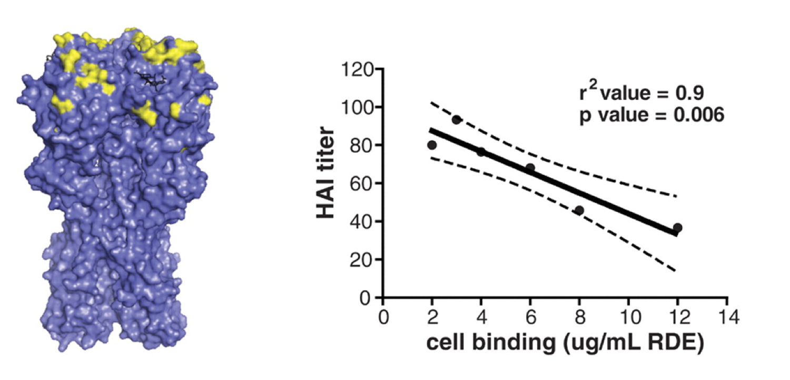

Immunity
Malaria and rain in India, 1987-2007

Influenza in St. Petersburg, 1968-2005

Infections in Seattle, 1924-1933

At the base of infectious disease dynamics...
...we have consumers and resources

Seemingly complex dynamics are common

With nonlinearity, correlations can mislead

Partial solution: Mechanistic models
$$H'=aH-bHL$$
$$L'=cHL-dL$$
$H$ hares, $L$ lynxes
hare birth rate $a$, predation rate $b$,
consumption rate $c$, death rate $d$
(Other solutions: experiments, causal inference)
(working hypothesis)
Competition for susceptible hosts shapes the ecological and evolutionary dynamics of pathogens.
Implicit assumption of SIR model
The susceptible fraction determines a pathogen's growth rate
$$I' > 0 \Rightarrow \frac{\beta S}{N} > \gamma$$
If the SIR model fits poorly, what next?
Other possibilities
transient dynamics and noise
host population structure
...
more complex forms of immunity
multiple "immunophenotypes"
How does the immune response "see" pathogens?
(in ways that impacts fitness?)
Immunity: Coordinated innate and adaptive responses

Innate immunity
Less specific
Nearly memoryless
But diverse and dynamic
The complement system
Extremely fast destruction, tagging, and signalling

Attacks via lectin, "alternative," and classical pathways
Effective against viruses, bacteria, parasites
Tags pathogens ("opsonization"), perforates (MACs)
Attracts phagocytes
Macrophages
Long-lived sentinels and killers

Resting, primed, or hyperactive
Display to T cells via MHC class II
Secrete IL-1, TNF, complement proteins to kill and signal
Neutrophils
"On call," do most of the dirty work

70% of WBCs, 100 billion produced daily, live 5 days
Respond to IL-1, TNF, f-met peptides from macrophages
Just kill and signal (e.g., IL-2)
Natural killer (NK) cells
"On call" for some killing and signalling
Target tumor cells, virus-infected cells, bacteria, parasites, fungi
Activated by LPS, interferons produced by dying cells
Kill cells bound by Abs (ADCC) or not expressing MHC class I
Major supplier of cytokines like IFN-$\gamma$ and TNF
Toll-like receptors (TLRs)
Pattern recognition receptors expressed on surfaces of lymphocytes
10 identified in humans so far (TLR1-10)
Recognize "pathogen-associated molecular patterns" (PAMPs)
e.g., TLR3 recognizes dsRNA (viral infections), TLR4 lipopolysaccharide (LPS) on bacteria
Adaptive immunity
More specific
Some memory
T cells recognize presented peptides

MHC class I
Bind peptides 8-11 amino acids long
Expressed on almost every cell
In humans, six genes encoded by HLA-A, HLA-B, HLA-C
Recognized by CTLs (CD8+ T cells)
MHC class II
Bind peptides 13-25 amino acids long
Expressed only by immune cells
In humans, encoded by HLA-D
Recognized by helper T cells (CD4+ T cells)
Dendritic cells: Master intelligence

Use TLRs and other receptors to detect pathogens
Sensitive to local cytokine profiles
Once in lymph nodes, use diverse costimulatory molecules to activate T cells
T cells: Activated by antigen presentation
Antigens presented by dendritic cells, macrophages, B cells
Co-stimulation required (B7 binds to CD28)
Dendritic cells provide "snapshot"
Macrophages provide sustained support
B cells can concentrate rare and familiar antigen

So... what are Th cells?
Produced by rearrangement, educated in thymus
If stimulated by DCs, proliferate (6-h doubling time)
After several days, become "effector cells", which
(1) remain in blood, helping B cells and CTLs, or
(2) help innate and adaptive cells in infected tissue.
Th cells secrete specific cytokine profiles!
General profiles of Th cells

Th1: IL-2, IFN-$\gamma$, TNF (viruses and bacteria)
Th2: IL-4, IL-5, IL-10 (parasite and mucosal infections)
Th17: IL-17A, IL-17F, IL-21, IL-22 (mucosal infections)
Signalling is local!
CTLs (CD8+ T cells): Kill infected cells

Activated in lymph node, requires Th
Proliferates following activation, enters tissue
Carefully kills infected cells via MHC I
Requires IL-2 (often from Th) to keep proliferating
B cells recognize protein structure

Two sources of B cell receptor diversity
Rearrangement of variable gene segments
Somatic hypermutation during affinity maturation
Antibodies are secreted B cell receptors
What does "antigenic variation" mean?
Formally, variation in surface proteins (antibody targets)
Broader concepts may be more useful
Adaptive immune memory
Unclear how memory B and T cells selected
Location of activation affects trafficking
(some circulate, some resident)
Tolerance
How does the immune system distinguish self from non-self?
Tolerance by T cells
Central tolerance: positive selection for non-self recognition
Peripheral tolerance: lack of co-stimulation, activation-induced cell death, regulatory T cells
Tolerance by B cells
"Receptor editing" occurs in bone marrow
T cells prevent some binding to self
Self-antigens rarely opsonized
How can natural and vaccine-induced immunity differ?
Heterogeneity in immune responses
arises in innate and adaptive immunity
Polymorphism in TLRs affects susceptibility

MHC shapes HIV dynamics


Balancing selection
Autoimmunity costly but increases winter survival

Measuring antibody responses
ELISAs
neutralization assays
others (e.g., HAI/HI, SPR, protein microarrays)
effector functions (ADCC, ADCP)
ELISAs
Indirect ELISA
Readout: Absorbance or optical density (OD)
Measuring T cell responses
ELISPOT: assays individual T cells cytokine production
Antigen stimulation with flow cytometry
Peptide:MHC tetramers to identify specificity
Repertoire analysis
SARS-CoV-2 T cell responses in kids vs. adults
The new frontier
Single-cell approaches
Local measurements
Not all immune responses matter
"Correlates" v. "causes" of protection
Partial clues: KOs, disorders, infection risk, evolution
Escaping immunity
Hide (human papillomavirus, HIV, EBV)
Suppress (cytomegalovirus)
Distract (hepatitis B virus)
Disguise (HIV)
Outrun (influenza A)
HPV: Hiding from the immune system
CMV: Immune suppression
HBV: Distraction
HIV: Disguise

Influenza: Outrun
What are the most common pathogens in humans?
What does their abundance have to do with their immune interactions?
Human papillomaviruses
Nearly 100% prevalence, but slow evolution

Enteroviruses: Common colds

Rhinoviruses include >100 serotypes

>90 serotypes of Streptococcus pneumoniae

Flu facilitates pneumococcus

Competition for susceptible hosts generates complex dynamics
Formal models beat intuition
Pathogens interact with multiple immune populations
Pathogens interact with very different hosts
Pathogens show extensive diversity, not only antigenic
Pathogens can compete with and facilitate one another